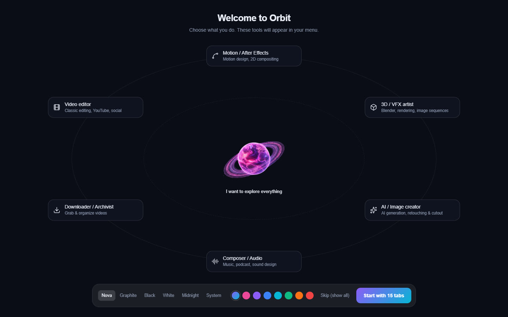

Installation
Install Orbit
- Download the installer: the Download Orbit button at the top left of this page, or the
Orbit releases page (file
Orbit-Installer.exe). - Run
Orbit-Installer.exeand follow the install window. - At the end, click the launch button: Orbit opens.
Orbit installs for your Windows account only (no administrator rights needed) and creates an Orbit shortcut on the desktop and in the Start menu.
If Windows shows "Windows protected your PC", click More info then Run anyway. This message appears for recent apps that Windows does not know yet.
First launch
On first launch, Orbit asks what you do (video editor, motion design, 3D, audio, downloading, image creation…). It then shows only the tools you need; I want to explore everything keeps them all. At the bottom, you also pick the theme and the accent color.


You can run this wizard again at any time: Settings › Appearance › Setup wizard › Relaunch. Hidden tabs stay reachable through search (Ctrl+K) and the Menu.
Modules installed on demand
Orbit stays light: heavy engines are only downloaded the first time you need them (ffmpeg, yt-dlp, AI engines, models). Each tool shows an Install button when something is missing, with a progress bar. The Settings › Modules & AI page lists every module, its size and its state, and installs or updates them in one go.
Modules and models live in the .orbit folder of your user folder (C:\Users\<you>\.orbit). Settings ›
System › Orbit data folder › Open shows it.
Updates
Orbit updates itself: at launch, it checks for a new version, downloads it in the background and installs it at the next restart. After an update, a window presents what is new.
- To check by hand: Settings › About › Check for updates.
- The download engine (yt-dlp) also updates itself at every launch, to keep up with site changes.
If a version is too old, the AI tools show Update required with a button that installs the latest version.
Uninstall
Windows Settings › Apps › Installed apps, find Orbit, then Uninstall. The .orbit folder
(modules, AI models, settings) is not removed: delete it by hand to get the disk space back.